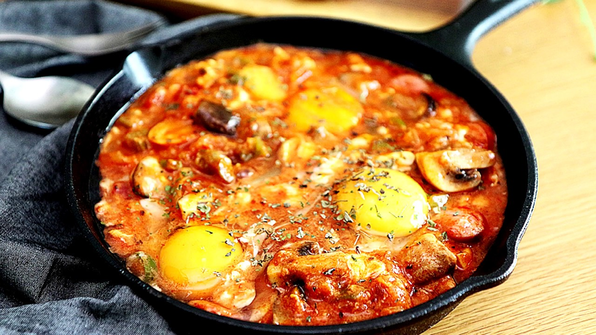

유튜브 레시피 영상
만개의 레시피
준비물 : 멸치, 다시마, 무, 배추, 깻잎, 소고기불고기, 청경채, 팽이버섯, 표고버섯, 새송이버섯
조리법
1. 냄비에 육수재료를 모두 넣고 10분간 끓이다 다시마를 건져낸다.
2. 10분가량 더 끓인 후 육수를 만들고 간장을 조금 넣어 간을 맞춰 준다.
3. 배추, 깻잎, 고기, 배추 순으로 차곡차곡 쌓은 후 전골 냄비 높이에 맞춰서 자른다.
4. 전골 냄비에 청경채를 깐 후 잘라 놓은 배추와 고기를 겹겹이 담는다.
5. 마지막으로 버섯를 넣고 육수를 냄비의 2/3정도가 올라오도록 넣은 후 배추와 고기가 익을 때까지 끓여준다.
*여담: 찌개와는 달리 일반 가정에서는 그다지 자주 먹지 않는다. 나베는 사람들이 이로리를 둘러싸고 무언가를 끓여 먹던 풍습에서 발전한 식문화로,
요리의 특성상 한 번의 식사로 다 먹어 치우지 못할 만큼의 양을 만들게 되는데 일본에는 이렇게 먹다 남은 걸 며칠씩 두고 두고 다시 데워 먹는 경우가 그다지 없기 때문.

유튜브 레시피 영상
만개의 레시피
준비물 : 버터, 마늘, 양파, 소금, 후추, 베이컨, 소세지, 버섯, 파프리카, 토마토소스, 우유, 청양고추, 달걀
조리법
1. 모든 재료는 적당한 크기로 썰어 준비한다.
2. 기름(버터)두른 팬에 마늘을 볶다가 향이 올라오면 양파를 넣어 소금, 후추를 뿌려 볶는다.
3. 베이컨, 소세지, 버섯을 볶다가 파프리카를 넣어 살짝만 볶아준다.
4. 토마토소스를 넣고 우유나 생크림으로 농도를 맞춘다.
5. 청양고추를 넣어 끓인다.
6.달걀을 올리고 취향에 따라 치즈를 뿌려서 뚜껑을 덮어 달걀을 익힌다.
*여담: 빨간 토마토소스가 지옥불을 연상시킨다고 하여 이름 붙여진 에그인 헬(Egg in hell)은 튀니지에서 흔히 볼 수 있는 전통 가정식 요리이다.

유튜브 레시피 영상
만개의 레시피
준비물 : 목살, 계란, 버터, 돈가스소스, 맛술, 설탕, 굴소스, 물
조리법
1. 먼저 소스를 만든다.(돈가스소스 3T, 맛술 2T, 설탕 2T, 굴소스 2T, 물 100g)
2. 이제 고기를 칼등으로 두드려주고, 소금, 후추를 뿌린다.
3. 팬에 연기가 올라올 때 고기를 넣어주고, 핏물이 올라오면 뒤집는다.
4. 뒷면이 어느 정도 익으면, 불을 낮추고 버터를 넣어준다. 앞뒷면 모두 버터에 한번 구워준다.
5. 소스를 넣고 조려준다.
6. 계란 후라이를 올려 마무리한다.
*여담: Steak는 '구운 요리'를 뜻하는 노르드어 고어인 Steik에서 유래하였다.